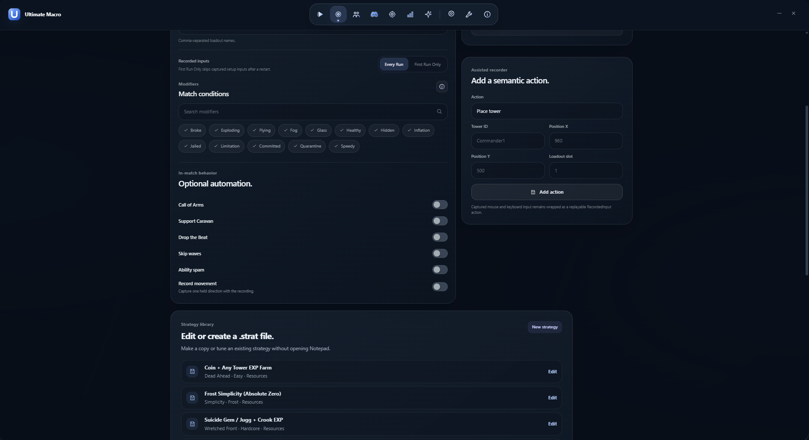

STRATEGIES
Play it once.
Keep the run.
Record what you do in a match, check the actions and use the strategy again when the next run starts.
RecordInspectReplayRotate
EXAMPLE RUN
See every action
before it plays.
Placements, upgrades, tracks and abilities stay together in one readable sequence. Community-made .strat files can help you get started.
00:02SPAWN TOWERMinigunner1 · Slot 1
00:11UPGRADE TOWERMinigunner1 · Path 2
00:19CHANGE DJ TRACKDJ · Track 2
00:33USE ABILITYCommander · Call of Arms
Strategy loaded→Towers equipped→Match checked→Run replayed→Next match

FILES IN THE PROJECT
Open a strategy.
See how it works.
Strategies are stored as .strat files. The project includes examples for different maps, modes and farming goals.
011_NST_DEAD_AHEAD_EASY.stratDead Ahead · Easy
02SUICIDE_MINIGUNNER_GEM_EXP_FARM.stratCommunity strategy file
03JuggernautExp.stratCommunity strategy file
Browse strategy files on GitHub ↗